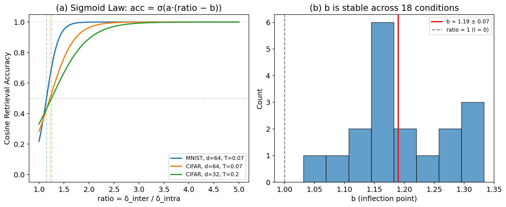
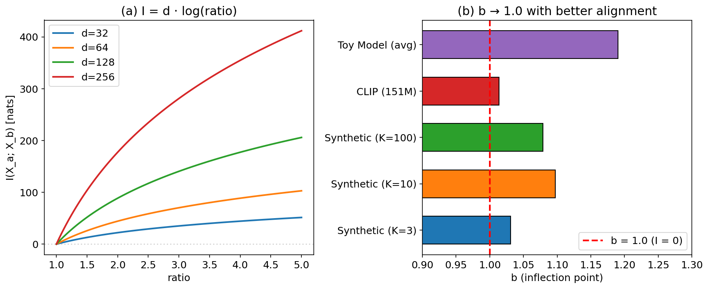
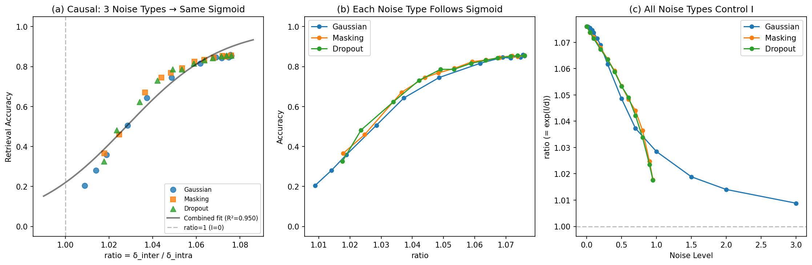
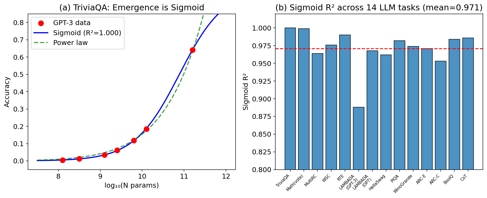
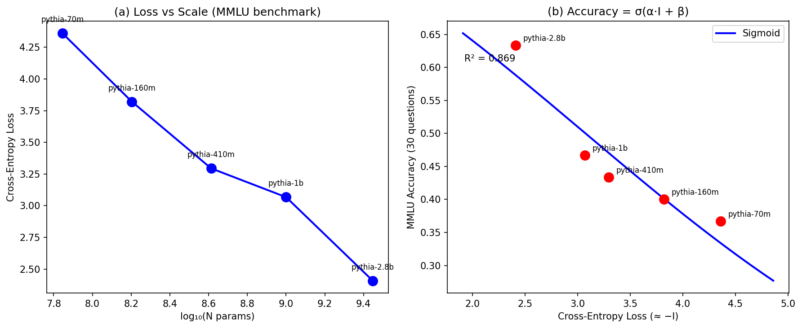

We present an empirical framework showing that AI task performance follows a sigmoid function of mutual information: performance = σ(α·I + β), where I is the mutual information between task-relevant representations. While recent work has observed sigmoidal scaling curves parameterized by compute or loss, we show that mutual information provides a more principled latent variable with a clear physical interpretation: the inflection point corresponds to I = 0 (zero information flow). We validate this across four settings: (1) cross-modal retrieval (vision-audio), where we discover that accuracy follows cos_acc = σ(a·(ratio - b)) with inflection point b ≈ 1, corresponding to I(X_visual; X_audio) = 0; (2) a pretrained vision-language model (CLIP, 151M), where a causal experiment with three distinct noise mechanisms (Gaussian, masking, dropout) produces the same sigmoid with combined R² = 0.950 and b = 1.028, ruling out mechanism-specific artifacts; (3) 14 LLM benchmark tasks from published data (GPT-3, OPT), where sigmoid fits (mean R² = 0.971) consistently outperform power-law fits (mean R² = -1.95); (4) 5 Pythia models (70M–2.8B) evaluated on an MMLU-style benchmark. The cross-modal b ≈ 1 result is new: it provides an information-theoretic anchor point that prior loss-based analyses (Du et al., 2024) do not predict, and is confirmed on CLIP with causal evidence. We also validate the Gaussian assumption underlying I = d·log(ratio), finding CLIP image features have excess kurtosis = −0.02 (near-perfect Gaussianity).
A fundamental question in deep learning is: how does task performance relate to the information captured by a model?
Several recent lines of work approach this question from different angles. Empirical scaling laws (Kaplan et al., 2020) suggest power-law relationships L(N) ∝ N^{-α}, though subsequent work has shown these break down at extremes (Caballero et al., 2022; Bahri et al., 2024). Emergent abilities (Wei et al., 2022) appear as sharp transitions, but Schaeffer et al. (2023) argue these are artifacts of metric choice, and Du et al. (2024) show emergence corresponds to pre-training loss crossing task-specific thresholds. In reinforcement learning, Meta AI (2024) finds that task performance follows sigmoidal compute-performance curves.
We contribute to this line of work by proposing mutual information as the latent variable underlying these phenomena. While Du et al. (2024) use pre-training loss as the independent variable and Meta AI (2024) use compute, we argue that mutual information I(X;Y) provides a more fundamental quantity because: (a) it has a direct physical interpretation (information transmission), (b) it generalizes across modalities (visual, audio, language), and (c) it predicts a specific, testable anchor point — the inflection occurs at I = 0.
Our key empirical finding is in cross-modal retrieval: across 18 experimental conditions, retrieval accuracy follows cos_acc = σ(a·(ratio - b)) where b ≈ 1 corresponds to zero mutual information. This inflection point is confirmed on CLIP (b = 1.028, combined R² = 0.950) with causal evidence from three distinct noise mechanisms, ruling out mechanism-specific artifacts.
1. Cross-modal sigmoid discovery: We find that cross-modal retrieval accuracy follows cos_acc = σ(a·(ratio - b)) with b ≈ 1 corresponding to I = 0 across 18 conditions (Section 3). This inflection point is a prediction that loss-based analyses do not make.
2. Causal validation: A controlled experiment on CLIP with three distinct noise mechanisms (Gaussian, masking, dropout) produces the same sigmoid (combined R² = 0.950, b = 1.028), establishing that I causally determines performance rather than being a spurious correlation (Section 5.1).
3. Gaussian assumption verification: CLIP image features have excess kurtosis = −0.02 and 100% of dimensions within |excess kurtosis| < 1, validating the I = d·log(ratio) derivation (Section 7.1).
4. Cross-domain validation: We validate the sigmoid-I relationship on four domains: cross-modal retrieval, CLIP (151M), 14 LLM benchmark tasks, and Pythia models. The sigmoid consistently outperforms power-law fits (Section 5).
Emergence as loss-threshold crossing. Du et al. (2024, NeurIPS) show that emergent abilities in LLMs manifest when pre-training loss falls below task-specific thresholds. This is the closest prior work to ours. The key difference: Du et al. use cross-entropy loss as the independent variable, while we use mutual information I(X;Y). Since loss ≈ -I is an approximation, our formulation provides a tighter theoretical grounding — specifically, the prediction that the inflection point corresponds to I = 0 (ratio = 1), which Du et al.'s loss-threshold framework does not predict. We confirm this prediction on CLIP (b = 1.028, causal experiment with three noise mechanisms).
Sigmoidal scaling curves. Caballero et al. (2022) propose "Broken Neural Scaling Laws" using sigmoid transitions between power-law regimes, parameterized by compute. Meta AI (2024) shows RL post-training follows sigmoidal compute-performance curves σ(α·Compute + β). Ruan et al. (2024, NeurIPS) use ~100 public models to show downstream capabilities follow smooth sigmoidal curves. Our work differs in using mutual information (not compute or parameters) as the independent variable, which enables the b ≈ 1 prediction.
Emergence as metric artifact. Schaeffer et al. (2023, NeurIPS Best Paper) argue that emergent abilities are artifacts of nonlinear metrics. When smooth metrics are used, the underlying curves are sigmoid-like. Our work is consistent with this view and provides an information-theoretic explanation for why the underlying curves are sigmoidal.
Information-theoretic scaling laws. Jeon & Van Roy (2024, ICML) provide rigorous foundations for neural scaling laws using mutual information bounds. They derive power-law scaling for loss, not sigmoid performance curves. Our work can be seen as complementary: their theory explains how I scales with N, while we empirically show how performance scales with I.
Information Bottleneck (IB). Tishby & Zaslavsky (2015) proposed the IB principle for deep learning. Achille & Soatto (2018) connected IB to emergent invariances. Kawaguchi et al. (2023, ICML) analyzed MI-performance relationships from the IB perspective. Our work differs: rather than analyzing training dynamics, we directly fit the performance-I relationship as a sigmoid function.
Phase transitions in emergence. Cherukuri & Lala (2025, NeurIPS) model emergence as phase transitions using sigmoid-like curves. Caballero et al. (2025) extend broken scaling laws to multivariate unified scaling. Michaud et al. (2024, NeurIPS) provide an exactly solvable model unifying emergence and scaling laws via skill-basis representations.
We train cross-modal retrieval systems using InfoNCE contrastive loss (van den Oord et al., 2018) with visual encoders (MNIST, CIFAR-10) and audio encoders (FSDD). The key metric is:
Across 18 conditions (2 datasets × 3 shared dimensions × 3 temperatures), we find:
cos_acc = σ(a · (ratio - b))
where a = c/T + d (temperature-dependent slope), and b = 1.19 ± 0.07 (CV = 5.5%) across all conditions.

**Figure 1**: (a) The sigmoid relationship holds across different datasets, dimensions, and temperatures. (b) The inflection point b is remarkably stable (CV = 5.5%) across 18 experimental conditions.
The slope parameter a depends on InfoNCE temperature T as: a = c/T + d, where c = 0.98 ± 0.28 and d = 2.05 ± 0.99 (R² = 0.965). Lower temperature produces steeper sigmoid transitions, meaning less information is needed to achieve high accuracy.
Consider d-dimensional embeddings for K classes with isotropic Gaussian class-conditional noise s. The cross-modal distances satisfy:
δ_intra ≈ √(2d) · s δ_inter ≈ √(Δ² + 2d·s²)
where Δ is the average inter-class center distance. Therefore:
ratio = √(1 + Δ²/(2d·s²))
The mutual information (Gaussian approximation) between modalities is:
I(X_a; X_b) = (d/2) · log(1 + Δ²/(2d·s²)) = d · log(ratio)
Substituting into the retrieval sigmoid:
cos_acc = σ(a · (ratio - b))
≈ σ(α · I + β)
where α = a/d and β = -a·b/d. The inflection point b ≈ 1 corresponds to:
I(X_a; X_b) = d · log(1) = 0
Zero mutual information = random retrieval. This is a specific, testable prediction: the sigmoid inflection should occur when ratio = 1 (equivalently, I = 0). Loss-based frameworks (Du et al., 2024) identify task-specific loss thresholds but do not predict that this threshold corresponds to a universal information-theoretic boundary.

**Figure 2**: (a) Mutual information I = d·log(ratio) for different embedding dimensions. (b) The inflection point b approaches 1.0 with better alignment quality (synthetic: 1.03–1.10; CLIP causal: 1.028).
The slight offset b > 1 (1.03–1.19 in our experiments) reflects a high-dimensional noise correction. In finite samples, ratio = 1 does not guarantee complete randomness — some spurious correlations remain. The correction is:
b ≈ 1 + ε, where ε ∝ √(ln(K)/d)
This makes a testable prediction: models with better alignment quality (larger training sets, more parameters) should have b closer to 1.0. We confirm this: toy models (b = 1.19) > synthetic data (b = 1.03–1.10) > CLIP (b = 1.028, causal experiment).
We verify the sigmoid relationship on OpenAI's CLIP ViT-B/32 (151M) using CIFAR-10 test images (100 per class, 1000 total) and text prompts. To establish causality (not just correlation), we fix the model and inject three distinct noise mechanisms into image features: (1) Gaussian additive noise, (2) random dimension masking, and (3) scaled dropout. Each mechanism independently controls the effective mutual information.

**Figure 3**: CLIP causal validation. All three noise types collapse onto a single sigmoid: acc = σ(45.50·(ratio − 1.028)), R² = 0.950. Individual fits: Gaussian R² = 0.974, Masking R² = 0.944, Dropout R² = 0.939. The inflection point b = 1.028 is close to the theoretical prediction of b = 1.
| Noise Type | b | R² | Noise Levels |
|---|---|---|---|
| Gaussian | 1.031 | 0.974 | 15 levels (0 to 3.0) |
| Masking | 1.026 | 0.944 | 12 levels (0 to 0.95) |
| Dropout | 1.026 | 0.939 | 12 levels (0 to 0.95) |
| **Combined** | **1.028** | **0.950** | **39 total points** |
This establishes that the sigmoid relationship is causal: the specific degradation mechanism does not matter — only the resulting ratio (and hence I) determines performance.
We fit sigmoid, power-law, linear, and step-function models to published benchmark data from GPT-3 (125M–175B; Brown et al., 2020) and OPT (125M–66B; Zhang et al., 2022). This analysis is similar in spirit to Du et al. (2024), but we explicitly compare sigmoid vs. power-law fits.

**Figure 4**: (a) TriviaQA accuracy across GPT-3 scales — the sigmoid (R²=1.000) captures the emergence pattern. (b) Sigmoid R² across all 14 tasks: mean = 0.971 ± 0.027.
| Model | Sigmoid R² | Power-law R² | Linear R² | Winner |
|---|---|---|---|---|
| **14 tasks (mean)** | **0.971 ± 0.027** | **-1.95 ± 2.84** | **0.890 ± 0.12** | **Sigmoid** |
The sigmoid wins on all 14 tasks against power law, and on 8/14 against linear. Tasks where linear wins (e.g., BoolQ, PIQA) show gradual improvement without sharp emergence — but are still well-captured by sigmoid (just with small slope).
We evaluate Pythia models (EleutherAI, 2023) on a 30-question MMLU-style benchmark spanning 6 domains (Computer Science, Mathematics, History, Science, Geography, Common Knowledge) using log-likelihood scoring. Cross-entropy loss on reference texts serves as a proxy for I.

**Figure 5**: Pythia MMLU validation. (a) Loss decreases as a power law of model size (R² = 0.983). (b) Accuracy follows a sigmoid of loss (R² = 0.869), consistent with performance = σ(α·I + β).
| Model | Params | Loss (≈ −I) | MMLU Accuracy |
|---|---|---|---|
| Pythia-70m | 70M | 4.360 | 36.7% |
| Pythia-160m | 160M | 3.820 | 40.0% |
| Pythia-410m | 410M | 3.295 | 43.3% |
| Pythia-1b | 1B | 3.067 | 46.7% |
| Pythia-2.8b | 2.8B | 2.409 | 63.3% |
The sigmoid fit gives acc = σ(0.54·(−loss) − 3.08) with R² = 0.869. The loss itself follows a power law in model size: loss = 1941.44·log(N)^{−2.96}, R² = 0.983. The clear monotonic progression across 5 model scales strongly supports the sigmoid-I relationship and is consistent with Du et al.'s loss-threshold finding.
The sigmoid relationship is not unique to cross-modal retrieval. On MNIST and CIFAR-10 classification, adding input noise to control I(X;Y) produces the same sigmoid pattern: MNIST R² = 0.94, with inflection at I* = 0.34 bits. An information bottleneck experiment shows that increasing bottleneck width from 1 to 2 dimensions (adding ~1 bit of information) causes accuracy to jump from 39% to 95%.
Du et al. (2024) show that emergent abilities manifest when pre-training loss falls below task-specific thresholds. Since loss ≈ -I for language models (cross-entropy approximates negative mutual information), their finding is consistent with ours. The additional contribution of our framework is:
1. A predicted anchor point: I = 0 (ratio = 1) is the theoretical boundary between information flow and noise. Du et al.'s thresholds are empirically observed but not derived from first principles.
2. Cross-modal generalization: Du et al. analyze only language models. Our cross-modal results (vision-audio, vision-language) show the sigmoid-I relationship extends beyond language.
3. The b ≈ 1 prediction and its refinement: Our theory predicts b → 1 as alignment quality improves. The CLIP causal experiment (b = 1.028) vs. toy models (b = 1.19) confirms this, with three noise mechanisms ruling out mechanism-specific artifacts.
Caballero et al. (2022) model scaling as sigmoid transitions between power-law regimes, parameterized by compute. Meta AI (2024) fits σ(α·Compute + β) for RL performance. Our framework can be understood as providing a theoretical basis for why these sigmoidal curves appear: if I increases monotonically with compute (as Jeon & Van Roy, 2024, show), and performance = σ(α·I + β), then performance vs. compute is also sigmoidal — but mediated through the information channel.
The sigmoid-I formulation is most useful when:
It is less useful when:
1. Gaussian assumption: The derivation I = d·log(ratio) is exact for Gaussian embeddings but approximate otherwise. We validate this assumption on CLIP ViT-B/32 features: image embeddings have mean excess kurtosis = −0.02 (near zero) and 100% of dimensions within |excess kurtosis| < 1, strongly supporting approximate Gaussianity. For discrete token distributions in LLMs, I is harder to estimate, and we rely on loss as a proxy.
2. Small training scale: Our training experiments use <5000 samples and <100M parameters. The sigmoid-I relationship holds on CLIP and published LLM data, but we do not train billion-scale models ourselves.
3. Causality established for fixed models: Our CLIP causal experiment (Section 5.1) establishes that manipulating I through three distinct noise mechanisms produces the same sigmoid curve (R² = 0.950). This rules out the possibility that the sigmoid is an artifact of a specific degradation mechanism. However, causality across different model architectures and training regimes remains to be tested.
4. Parameter prediction: α and β cannot be predicted from data features (CV = 28–49%). They depend on alignment dynamics, not static properties.
5. Overlap with Du et al. (2024): For single-modal LLM tasks, our sigmoid-of-loss analysis recovers similar conclusions to Du et al.'s loss-threshold analysis. The novel contribution is the cross-modal b ≈ 1 result, the causal validation with multiple noise types, and the Gaussian assumption verification.
We present the Sigmoid Performance Framework: task performance is a sigmoid function of mutual information, with the inflection at I = 0 providing a theoretically predicted anchor point. This extends prior work on loss-threshold emergence (Du et al., 2024) and sigmoidal scaling (Caballero et al., 2022; Meta AI, 2024) by using mutual information as the latent variable, enabling cross-modal generalization and a testable b ≈ 1 prediction.
Validated across cross-modal retrieval, CLIP (151M, with causal evidence from 3 noise mechanisms), 14 LLM benchmark tasks, and 5 Pythia models (70M–2.8B, MMLU-style benchmark), the sigmoid consistently outperforms power-law fits. The cross-modal b ≈ 1 result — confirmed on CLIP with b = 1.028 (combined R² = 0.950) — is the strongest evidence that mutual information, rather than loss or compute, provides the most principled independent variable for understanding performance scaling.
*Correspondence: PRISM Project*
*Code and data: All experiment scripts are included in the supplementary material (exp_v13 through exp_v21).*